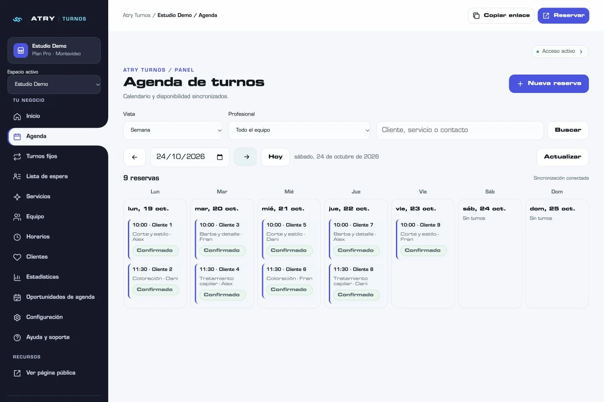
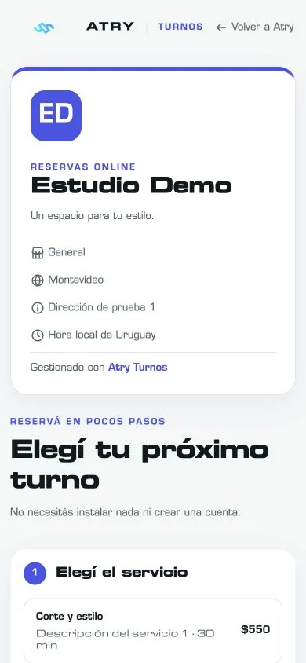
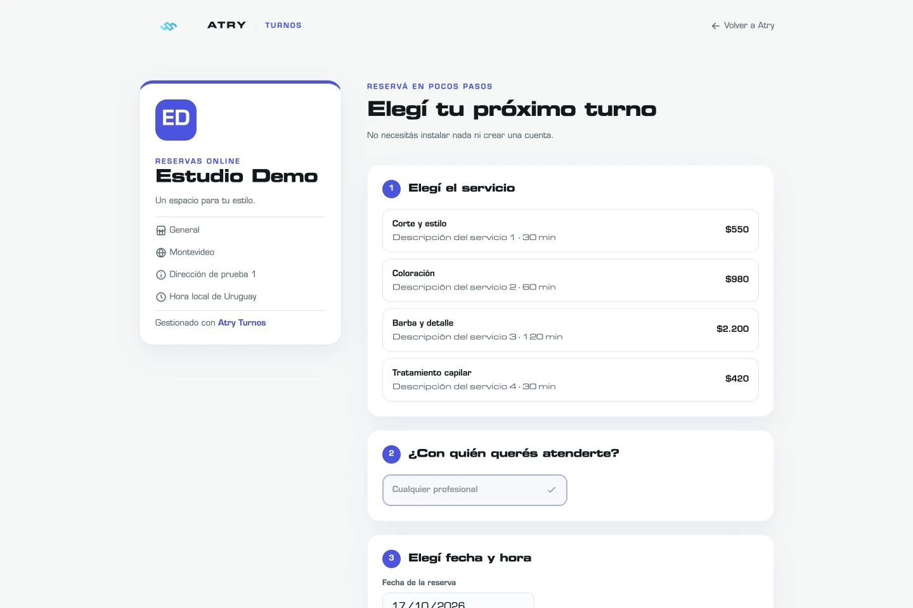
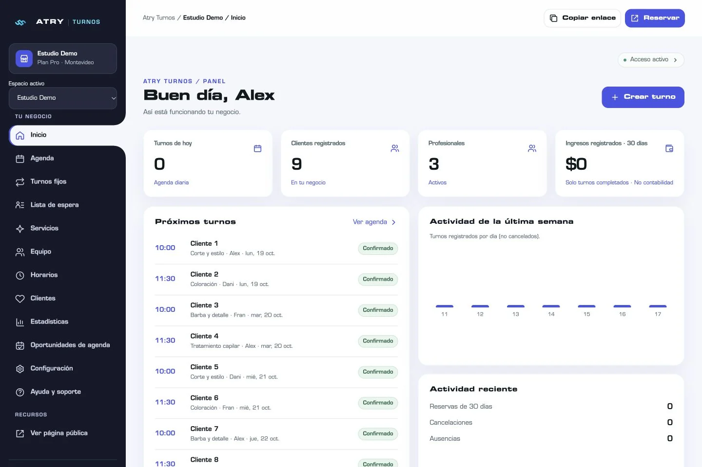

Configurá tu negocio
Después de coordinar la habilitación, prepará servicios, duraciones, profesionales y horarios. Incluso jornadas divididas en varios tramos.
ATRY TURNOS / RESERVAS ONLINE
Tu agenda, tu equipo y tus reservas, en un solo lugar. Una forma más simple de organizar el día y recibir a tus clientes.
¿Ya tenés cuenta? Iniciá sesión.
MENOS COORDINACIÓN. MÁS CLARIDAD.


Interfaz real. Datos de demostración.
01 / RECUPERÁ EL FOCO
Revisar conversaciones, cruzar horarios y confirmar quién atiende cada turno puede ocupar buena parte del día.
ATRY Turnos reúne esa información en una agenda clara. Tus clientes eligen entre los horarios disponibles y vos administrás las reservas desde tu panel.
Conocé las pantallas reales02 / MIRÁ CÓMO SE SIENTE
Recorré tres pantallas reales del producto.
Una presentación guiada, sin cargar datos ni realizar reservas.

03 / DE TU NEGOCIO A TU AGENDA
Después de coordinar la habilitación, prepará servicios, duraciones, profesionales y horarios. Incluso jornadas divididas en varios tramos.
Sumalo a tus redes o enviáselo a tus clientes. Desde ahí pueden elegir un servicio y reservar entre los horarios disponibles.
Consultá tu agenda por día, semana o mes. Revisá reservas y gestioná cambios desde el navegador de tu computadora o celular.
04 / CADA COSA EN SU LUGAR
Desde una agenda personal hasta un equipo de profesionales. Elegí las herramientas que necesita tu negocio.

Agenda diaria, semanal y mensual. Disponibilidad por profesional, pausas y excepciones por fecha.
En todos los planesDefiní servicios, precios y duraciones. Mantené los datos de tus clientes junto a su historial de reservas.
En todos los planesOrganizá profesionales y accesos. Gestioná turnos fijos, lista de espera y correos operativos según tu cupo.
En Negocio y ProEstadísticas básicas desde Negocio. Pro suma insights avanzados, exportaciones, recursos compartidos y oportunidades de agenda.
Según tu plan05 / TU MARCA TAMBIÉN RESERVA
La tecnología de tu negocio también debería representar tu identidad. Cargá y recortá tu logo, elegí tus colores y personalizá el panel y la página de reservas.
Una experiencia coherente para tu equipo y para quien está por visitarte.
Personalización incluida en los tres planes06 / PARA NEGOCIOS CON CITA PREVIA
Cortes, color y servicios con distintos tiempos. Una agenda organizada por profesional.
Tratamientos, disponibilidad y pausas para preparar cada atención.
Tu propia agenda y un enlace para que tus clientes encuentren su próximo horario.
Si tu operación requiere reglas particulares, consultá su compatibilidad antes de contratar.
07 / UN PLAN PARA CADA MOMENTO
Suscripción mensual por negocio.
Precios en pesos uruguayos.
TU AGENDA, EN ORDEN
Para trabajar por tu cuenta.
$790UYU / mes
1 profesional
Sin correos automáticos de reservas.
Comenzar ahoraPARA TRABAJAR EN EQUIPO
Más personas. Una agenda clara.
$1.490UYU / mes
Hasta 4 profesionales activos
Hasta 300 correos de reservas por ciclo mensual.
Comenzar ahoraMÁS HERRAMIENTAS DE GESTIÓN
Para una operación con más necesidades.
$2.490UYU / mes
Hasta 10 profesionales activos
Hasta 900 correos de reservas por ciclo mensual.
Comenzar ahoraContratación y activación coordinadas con ATRY. Creá tu cuenta, solicitá el plan desde la aplicación y continuá por WhatsApp con el contacto que allí se indica. El servicio se habilita después de verificar el pago.
Valores mensuales propuestos, verificados el 17/10/2026. El tratamiento de impuestos está pendiente de confirmación y se define antes de contratar. Los cupos de correo son por ciclo mensual y no equivalen a entrega garantizada. No se incluyen pagos online ni WhatsApp automático.
08 / ANTES DE EMPEZAR
Información clara para elegir tu próximo paso.
Es una plataforma de reservas online de ATRY Agency. Reúne servicios, disponibilidad, profesionales y turnos en un panel para administrar tu negocio.
Para barberías, peluquerías, estética, estudios de uñas y profesionales que atienden con cita. Configurás tus propios servicios y duraciones. Si tu operación tiene necesidades particulares, consultá antes de contratar.
Creá tu cuenta y tu negocio en la aplicación. Elegí un plan y registrá la solicitud de contratación. ATRY coordina el pago y confirma la habilitación. Después preparás tus servicios y horarios y compartís tu enlace de reservas.
Sí. La aplicación funciona desde el navegador de tu computadora o celular. Tus clientes también pueden abrir el enlace de reservas desde su teléfono, sin instalar una aplicación.
La suscripción corresponde a cada negocio. La contratación, los cobros y la habilitación se coordinan manualmente con ATRY. Podés solicitar una mejora o un cambio desde Plan y suscripción; ATRY confirma cuándo entra en vigencia. No hay cobro automático con tarjeta.
Sí. Podés agregar varios tramos por día y profesional, como 09:00–11:00 y 14:00–15:00. También organizar pausas, ausencias y excepciones por fecha.
Sí. Podés cargar, recortar y quitar el logo, elegir colores y personalizar la apariencia del panel y la página pública de reservas.
Depende del plan. Negocio y Pro incluyen equipo, permisos y correos operativos con un cupo por ciclo mensual. Individual está pensado para un profesional y no incluye correos automáticos de reservas. WhatsApp automático no está habilitado.
Desde Ayuda y soporte en tu panel podés registrar una consulta o incidencia. Para contratar, usá la solicitud de plan de la aplicación y continuá con el contacto comercial que allí se indica.
TU TIEMPO TIENE MEJORES PLANES.
Organizá tu agenda y ofrecé una experiencia profesional a tus clientes.
Diseñado y desarrollado por ATRY Agency